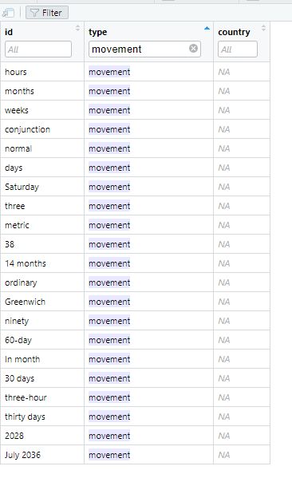
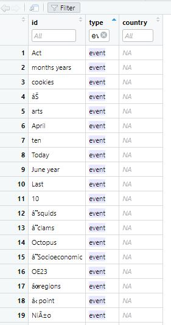

#Load Libraries
pacman::p_load(jsonlite,tidygraph, ggraph, visNetwork, tidyverse)
#load Data
#If we already have jsonlite, we don't need it anymore
MC1<- jsonlite::fromJSON("data/MC1.json")TakehomEx2
Problem Statement
Seafood is a highly traded commodity globally, with over a third of the world’s population relying on it as a primary source of protein. However, illegal, unreported, and unregulated fishing practices have led to overfishing and pose significant threats to marine ecosystems, food security in coastal communities, and regional stability. These activities are associated with organized crime and human rights violations.
FishEye International, a nonpartisan NGO, aims to understand the factors driving illegal fishing. They have collected data over the years to gain insights into this issue. FishEye International is getting help to assist them in interpreting the conflicting data and eventually making recommendations on how to address illegal fishing and its broader impacts.
Goal of this file: Contextualize Data
FishEye has collects online news articles about fishing, marine industry, and international maritime trade. To facilitate their analysis, FishEye uses a natural language processing tool to extract the names of entities (people and businesses) and the relationships between them. We will focus on the following 4 entities:
Entities to investigate
Mar de la Vida OJSC
979893388
Oceanfront Oasis Inc Carrie
8327
Data Preprocessing
Load the library and read the json relationship file MC1.
After checking MC1, the data is a found to be in a list and it’s not stored in proper structure in R for Graph objects, such as igraph, tidygraph etc. We need to pull out the nodes and links out from the MC1 and store them in R Graph Objects.
By visual inspection of raw data, MC1 Nodes and Links both contain “dataset” column with only “MC1” as value, they can be eliminated.
We picked the desired fields and reorganized the columns using select function.
MC1_nodes <- as.tibble(MC1$nodes) %>%
select(id, type, country) Warning: `as.tibble()` was deprecated in tibble 2.0.0.
ℹ Please use `as_tibble()` instead.
ℹ The signature and semantics have changed, see `?as_tibble`. MC1_edges <- as.tibble(MC1$links) %>%
select (source, target, type, weight, key) MC2<- fromJSON("data/mc2_challenge_graph.json")Cleaning data for nodes
#| code-fold: true
#| code-summary: "Show code"
#to check data table
head(MC1_nodes, n = 30)# A tibble: 30 × 3
id type country
<chr> <chr> <chr>
1 Spanish Shrimp Carriers company Nalakond
2 12744 organization <NA>
3 143129355 organization <NA>
4 7775 organization <NA>
5 1017141 organization <NA>
6 2591586 organization <NA>
7 185040354 organization <NA>
8 Faroe Islands Shrimp Shark company Rio Isla
9 341411 organization <NA>
10 21323516 organization <NA>
# ℹ 20 more rows # Check summary statistics of the data
summary(MC1_nodes) id type country
Length:3428 Length:3428 Length:3428
Class :character Class :character Class :character
Mode :character Mode :character Mode :character # Count the number of unique IDs
unique_id_count <- MC1_nodes %>%
distinct(id) %>%
nrow()
unique_id_count # this is 3417 smaller than 3428, it means there are duplicate fields to remove[1] 3417 # Count the number of non-NA values in each column
colSums(is.na(MC1_nodes)) id type country
0 605 2316 # Check unique values in the "type" column
unique(MC1_nodes$type)[1] "company" "organization" NA
[4] "person" "location" "political_organization"
[7] "vessel" "movement" "event" # Check unique values in the "country" column
length(unique(MC1_nodes$country))[1] 118Issues found:
- The unique_id_count (3417) is smaller than raw row count (3428), there are duplicate ids in the dataset. We will need to remove duplicate id.
- There’s no NA row for ids, however for country or for type, there are NA values. And in some cases there’s only id and both country and type value are missing. We will remove these data as a id value itself alone doesn’t provide much information.
- There are at least 118 distinct countries possible, however the country values are not in the same format. Some are fictitious name such as “Nalakond, Rio Isla” which can’t be found in real world, while the rest of them is a country with sequence number such as “Country_271835”.
- In this study, we want to focus on names of entities (people and businesses) and the relationships between them, so for other type we may remove them.
| Type Issue | Example |
|---|---|
| type “movement” doesn’t relate to people and business, we can remove. |  |
In MC_edges file, where there’s corresponding ids under movement type should be removed as well, as the relationship mapping doesn’t make sense. For example, months appear in target field, these rows should be analyasis. |
 |
| Type “Event” doesn’t relate to people and business. We can remove them. |  |
In MC_edges file, where there’s corresponding ids under events type should be removed as well, as the relationship mapping doesn’t make sense. For example, past years appear in target field, thees rows should be removed from analyasis. |
 |
Cleaning data for edges
#| code-fold: true
#| code-summary: "Show code"
#to check data table
head(MC1_edges, n = 30)# A tibble: 30 × 5
source target type weight key
<chr> <chr> <chr> <dbl> <int>
1 Spanish Shrimp Carriers 12744 ownership 0.900 0
2 Spanish Shrimp Carriers 21323516 partnersh… 0.846 0
3 Spanish Shrimp Carriers 290834957 partnersh… 0.965 0
4 Spanish Shrimp Carriers 3506021 ownership 0.964 0
5 Spanish Shrimp Carriers Conventionâ family_re… 0.823 0
6 Spanish Shrimp Carriers 2262 family_re… 0.893 0
7 Spanish Shrimp Carriers Ashley Davis family_re… 0.839 0
8 Spanish Shrimp Carriers 924 family_re… 0.885 0
9 Spanish Shrimp Carriers 95 family_re… 0.887 0
10 Spanish Shrimp Carriers Ancla Azul Company Solutions membership 0.899 0
# ℹ 20 more rows # Check summary statistics of the data
summary(MC1_edges) source target type weight
Length:11069 Length:11069 Length:11069 Min. :0.0253
Class :character Class :character Class :character 1st Qu.:0.8337
Mode :character Mode :character Mode :character Median :0.8715
Mean :0.8731
3rd Qu.:0.9148
Max. :0.9923
key
Min. : 0.0000
1st Qu.: 0.0000
Median : 0.0000
Mean : 0.2041
3rd Qu.: 0.0000
Max. :21.0000 #To find duplicate rows in the MC1_edges data frame based on the "source" and "target" and "type" columns
#the subset() function is used to select only the "source" and "target" columns from MC1_edges. The duplicated() function is then applied to identify rows with duplicated combinations of "source" and "target". By using the | (OR) operator with duplicated(subset(...)) and duplicated(subset(...), fromLast = TRUE), it finds both the first occurrence and the last occurrence of the duplicated rows.
duplicate_rows <- MC1_edges %>%
filter(duplicated(subset(., select = c("source", "target", "type" ))) |
duplicated(subset(., select = c("source", "target" , "type")), fromLast = TRUE))
# check if there are any NA values in each column
colSums(is.na(MC1_edges))source target type weight key
0 0 0 0 0 unique(MC1_edges$key) [1] 0 1 2 3 4 5 6 7 8 9 10 11 12 13 14 15 16 17 18 19 20 21 unique(MC1_edges$type)[1] "ownership" "partnership" "family_relationship"
[4] "membership" In edge dataset, no NA rows for each of the column. For duplicates, though the rest of the values are the same, but their key and weight are different.
Handling missing values and not useful value
By checking MC1_nodes, quite a number of rows only have id, there’s no type and country information. Delete these type of nodes as they do not add value to the analysis.
#| code-fold: true
#| code-summary: "Show code"
# only keep distinct idS
# Filter out rows with NA values in both country and type columns
MC1_nodes_unique<- MC1_nodes %>%
distinct(id, .keep_all = TRUE) %>%
filter(!is.na(country) | !is.na(type))
# further filter to remove the rows in MC1_nodes_unique where the type column is either "movement" or "event"
MC1_nodes_cleaned <- MC1_nodes_unique %>%
filter(!type %in% c("movement", "event"))After filtering, only 2721 entries left in MC1_nodes_cleaned to be used in the analytics.
Data consistency in entity names and relationships
Here we need to remove rows in edge, where either source or target id is not found in nodes. Nodes id should be the Primary Key for all source/target entries in Edge, filtering is required in edge dataset to only keep source/target with the ids appeared in node dataset.
#| code-fold: true
#| code-summary: "Show code"
MC1_edges_cleaned <- MC1_edges %>%
filter(source %in% MC1_nodes_cleaned$id, target %in% MC1_nodes_cleaned$id)The number of rows reduce from 11069 to 6490 after filtering.
Entity Visualization
create The tbl_graph object
Using tidygraph package, we will build tidygraph network graph data.frame. The graph is directed with source and target specificed.
(Planning: Display entities relationship as we focused (graph network))
peopleEntityRelationship <- tbl_graph(nodes = MC1_nodes_cleaned,
edges = MC1_edges_cleaned,
directed = TRUE)Interactive Exploration
(Planning: Interactive Exploration: Develop an interactive interface that allows analysts to explore the entities and their context dynamically. Enable functionalities like filtering, highlighting, and zooming to focus on specific entities or connections of interest. This interactive approach will help analysts identify patterns, anomalies, and potential links to illegal fishing more efficiently.)
Interpretation:
(Planning: provide evidence of each entity, iif they are involved in illegal fishing, provide conclusion) 00 600 words and 6 images
(Planning: put in compare and contrast of identified entities vs. other entities, discuss how visual analytics hhelp to find entities with potential issues – what are the patterns?) – 400 words and 4 images.
Reflection:
What was the most difficult aspect of working with this knowledge graph? Did you have the tools and resources you needed to complete the challenge? What additional resources would have helped you? (300 words)